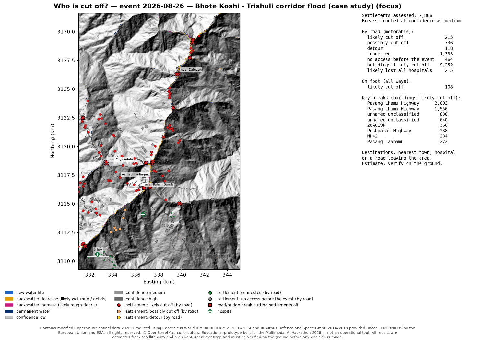
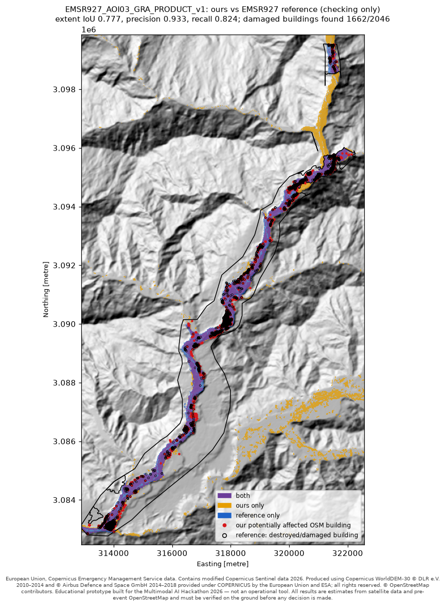

Multimodal AI Hackathon 2026 · Track B "Mapping flood damage from space" ·
Nandika Agarwal · github.com/itskiee/floodmap
Educational prototype built for the Multimodal AI Hackathon 2026 — not an operational tool. All results are estimates from satellite data and pre-event OpenStreetMap and must be verified on the ground before any decision is made.
After a Himalayan debris flood, district emergency centres, army and police helicopter teams and relief organisations need three answers fast, often before anyone can reach the valley: where did the flood hit, what was damaged, and who is cut off? floodmap takes any area and flood date and answers them from free data only: Sentinel-1 radar, Sentinel-2 optical images when the sky is clear, the Copernicus DEM and OpenStreetMap (OSM) as it was before the event. Results are worded as estimates for prioritising field checks ("potentially affected", "likely cut off … needs field verification"), never as certainties. The case study is the Bhote Koshi – Trishuli flood of 2026-08-26 in Nepal.
One entry point, run_pipeline(area, date), serves the command line, a local
Streamlit dashboard and the tests. It runs 14 stages: radar change detection, terrain
masks, Sentinel-2, a confidence map, our own segmentation model, pre-event OSM, the flood-path
bonus, damage overlay, cut-off analysis, rescue priority, helicopter landing-zone candidates,
later satellite passes, the one-page situation report and an offline field package (GeoPackage,
KML, GPS waypoints). Each stage returns ok / partial / skipped / failed with a reason and never
stops the run, because judges test live on areas they choose. All tunable values sit in one
commented configuration file; nothing is specific to Trishuli. Everything runs on the user's
laptop: there is no external AI service and only requests for the public input data leave the
machine. The data rules are enforced in code: allowlists of collections and web hosts at
runtime, and a test that scans the code for forbidden sources (with self-tests).
Sentinel-1 change detection. Ground-range images are calibrated and terrain-corrected with the Copernicus DEM on Copernicus Data Space (openEO) at 20 m. Before and after images are compared only on the same orbit track: the first acquisition after the flood date against the median of up to 3 earlier ones (less speckle, no single unusual day), for up to 2 tracks. On the case study: track 85 ascending, after-image 2026-08-28 (Sentinel-1D); track 19 descending, after-image 2026-09-05 (Sentinel-1D). After a 3×3 speckle filter, the log-ratio of after/before backscatter is classified: new water-like (decrease ≤ -3.0 dB and after-image VV ≤ -15.0 dB), likely wet mud/debris (strong decrease, not water-dark) and likely rough debris (increase ≥ +3.0 dB, in VV or VH). Debris shows in both directions in radar, which is why both are kept.
Terrain and confidence. From the Copernicus DEM we compute slope, height above the nearest river (HAND) and the radar's layover/shadow for each track. Change counts as flood only where flooding is plausible (HAND ≤ 30 m, slope ≤ 30°, seen by the radar). Sentinel-2 adds new water and stripped vegetation where cloud-free (31% of the area on 2026-08-27). Confidence counts independent detections that agree (two radar tracks, Sentinel-2). Result: 15.60 km² potentially affected (high 10.46, medium 2.41, low 2.72).
OSM comes only from the ohsome API at an explicit snapshot before the event (2026-07-27, the latest ohsome data). Because the brief's endpoint for current geometries was refused, we rebuild the snapshot from ohsome's full history (keeping exactly the versions valid at the snapshot; proven equal to ohsome's own counts) and refuse any newer version. Buildings, roads, bridges, places and hospitals/health facilities are overlaid on the flood map with small buffers (buildings 10 m, roads 10 m, facilities 20 m). A bridge counts when its deck or approach (30 m) touches detected change, or when the river reach within 150 m changed, because the channel under a lost bridge was water before and after and shows no change. Settlements are groups of at least 5 buildings linked within 75 m, named from OSM places. Result: 3,332 of 107,091 buildings potentially affected (2,524 high confidence), 80.5 km of motorable road and 163 bridges.
A road graph is built from the pre-event OSM roads in the area plus a 10 km margin. Every settlement is routed to its nearest town (OSM town/city), nearest hospital, and a road leaving the area (a virtual "outside" node, so places near the edge are not wrongly cut off), before and after removing road pieces in detected flood/debris. Only breaks of medium or high confidence count as "likely cut off"; low-confidence breaks give "possibly cut off". A route more than 1.5× longer (and at least 2.0 km more) is a detour. Motorable roads and all ways (including foot paths) are reported separately. For each settlement the first break on its old route is named with its distance, in the brief's form: "near Bidur (1,341 buildings): likely cut off by road (likely impassable at Pasang Lhamu Highway, 2.87 km away, high confidence) … Needs field verification." The brief's A/B/C/D example is a unit test. Result: 215 of 2,866 settlements likely cut off by road (9,252 buildings), 736 possibly; 108 have no mapped foot path either. Rescue priority uses transparent tiers (cut off and damaged, cut off, damaged but reachable, possibly cut off) and lists its reasons. Helicopter landing-zone candidates (slope ≤ 6°, a 60 m clear square, dry, away from buildings, within 3 km) exist for 172 of 215 cut-off settlements. Later passes on the same track (4 dates) show water 0.65 → 1.02 km² and flag 3 possible lakes forming behind debris (verify).
Bonus: flood path. From any upstream point, the flood path is traced down the valley by steepest descent on the Copernicus DEM (D8 flow directions), and the settlements along it are listed with their distance downstream and height above the river. From a point near the border, the case-study path runs 87.8 km (from 2084.4 m to 396.5 m elevation); 43 settlements lie within 1 km of it, of which 9 are low-lying, and 51% of the path crosses detected change.

We chose the brief's option 1 and trained a U-Net from scratch (no pretrained weights; base 16 channels, 482,593 parameters) on the Sen1Floods11 hand-labelled Sentinel-1 chips (VV, VH) at the pipeline's 20 m resolution, on a laptop CPU in 40.8 minutes; it runs locally with onnxruntime. On held-out test chips it clearly beats the simple radar threshold rule; on the unseen Bolivia event the margin depends on the training run (below):
| Held-out data | Our U-Net IoU | Threshold rule IoU |
|---|---|---|
| Sen1Floods11 test chips | 0.649 | 0.445 |
| Bolivia (entire event never seen) | 0.648 | 0.581 |
| validation chips (used to pick the epoch) | 0.629 | 0.447 |
Improvement attempts, decided in advance by validation IoU only (adopt if at least 0.005 better; test and Bolivia never used to choose): 4x larger (base 32, 50 epochs): validation 0.6285, Bolivia 0.536; weight averaging (EMA 0.995 with warm-up): validation 0.6247, Bolivia 0.585; weight averaging + brightness augmentation (+-1.5 dB): validation 0.6242, Bolivia 0.590. None beat the current model (validation 0.6293), so it was kept. Across the four variants the unseen-event (Bolivia, 15 chips) IoU ranges 0.536-0.648: that estimate varies a lot between trainings, so our 0.648 is likely at the favourable end. The limit is the training data, not the model size or training procedure.
Himalayan scenes it has never seen. No Nepal or Himalayan chip is in the training data. Here the model transfers poorly: on the case study it marks 21.549 km² of "water" outside the plausible zone (radar shadow on steep slopes, removed by the terrain masks) and only 0.889 km² of new water inside it, because the 1–5-pixel-wide debris corridor is mostly mud and debris, not open water. Against EMSR927 its new-water IoU is AOI01 0.00, AOI02 0.00, AOI03 0.05, AOI05 0.26, with precision near 1 where it does flag water, and it raised no false new water in a no-flood control. The change detection therefore stays the primary map and the model is a documented second opinion; it is not counted as an independent confidence source (same image).
EMSR927 was used only to check results. The method was frozen (commit 048c725) before the reference was opened; nothing was tuned afterwards. We compared our flood/debris extent with the EMS observed event, our potentially affected buildings with EMS destroyed/damaged buildings (15 m tolerance), and our key road breaks with EMS damaged roads:
| EMS area (grading) | Extent IoU | Precision | Recall | EMS-damaged buildings we flagged | Our key breaks on EMS-damaged roads |
|---|---|---|---|---|---|
| AOI01 Syabrubesi (gorge) | 0.30 | 0.98 | 0.31 | 170 / 355 | 4 / 4 |
| AOI02 Timure (gorge) | 0.30 | 1.00 | 0.30 | 131 / 405 | 4 / 4 |
| AOI03 Bidur (valley) | 0.78 | 0.93 | 0.82 | 1,662 / 2,046 | 19 / 22 |
| AOI05 Phosretar | 0.68 | 0.91 | 0.72 | 264 / 361 | 12 / 22 |
Precision is 0.91–1.00 everywhere: what we flag, EMS also mapped. In the wide valley (Bidur) the overlap is high. In the narrow upper gorge we find about a third of the EMS extent; 66%–72% of the missed area lies outside our terrain-plausible zone (steep slopes, high above the computed river line). Relaxing those limits would add false alarms on every slope in the country, so we report the trade-off instead of tuning to the reference. 39 of 52 of our key breaks lie on roads EMS graded as damaged. Our 20 m radar pixels cannot match 0.3–1 m photo-interpretation exactly even when correct.

The full system ran on 5 places it had never seen (Himalaya, Europe, South America, a desert city, no-flood control), exactly as a judge would run it. Stages failed: 0. 0 invalid inputs (future date, open sea, tiny/huge/inverted area, pre-Sentinel date, bad text) produced no Python traceback; each got a plain-language answer.
| Place | Date | Minutes | Stages ok/partial/skipped/failed | Potentially affected km² | Settlements likely cut off / assessed |
|---|---|---|---|---|---|
| No-flood control, Pokhara (Nepal), dry season | 2025-01-15 | 12 | 12/1/1/0 | 1.6 | 2 / 856 |
| Record rainfall flooding, Dubai (United Arab Emirates) | 2024-04-16 | 26 | 13/0/1/0 | 81.0 | 635 / 1,279 |
| Mundakkai-Chooralmala debris flow, Wayanad, Kerala (India) | 2024-07-30 | 12 | 11/1/2/0 | 1.4 | 4 / 60 |
| Rishiganga-Dhauliganga rock-ice avalanche and debris flood, Chamoli, Uttarakhand (India) | 2021-02-07 | 15 | 9/4/1/0 | 1.7 | 1 / 48 |
| Beas river flood, Kullu-Manali, Himachal Pradesh (India) | 2023-07-10 | 21 | 13/0/1/0 | 6.1 | 172 / 442 |
In the no-flood control (No-flood control, Pokhara (Nepal), dry season), 1.56 km² of 326 km² was still flagged, of which [pending: value] km² with high confidence, and 2 small settlements came out "likely cut off": scattered field and shoreline changes, not a flood. This is the false-alarm floor of radar change detection, and the reason every result carries a confidence level and "needs field verification".
No images of victims are used. Educational prototype built for the Multimodal AI Hackathon 2026 — not an operational tool. All results are estimates from satellite data and pre-event OpenStreetMap and must be verified on the ground before any decision is made.
Contains modified Copernicus Sentinel data 2026.
Produced using Copernicus WorldDEM-30 © DLR e.V. 2010–2014 and © Airbus Defence and Space GmbH 2014–2018 provided under COPERNICUS by the European Union and ESA; all rights reserved.
© OpenStreetMap contributors.
Validation (checking only): European Union, Copernicus Emergency Management Service data.
OSM-derived data: Open Database License (ODbL).